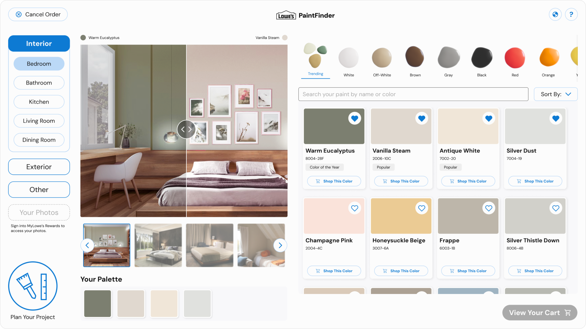
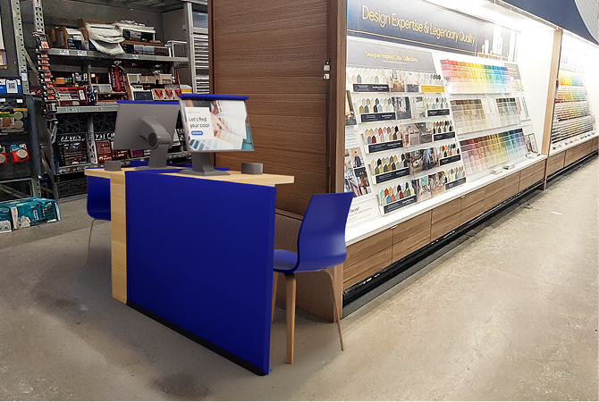
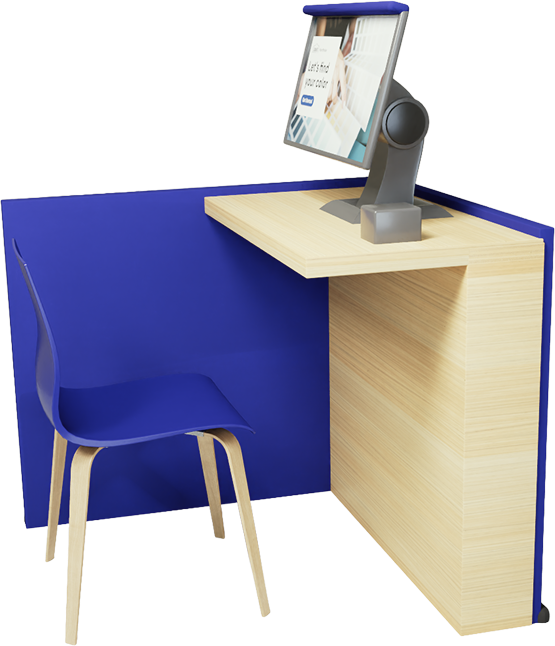
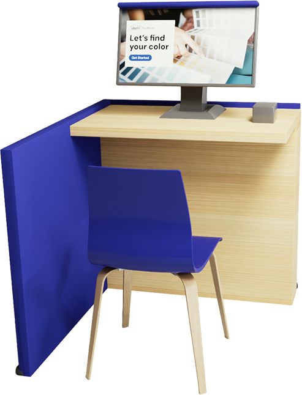

Take your time
PaintFinder gives shoppers an intimate, self-paced environment next to the paint aisle, allowing them to easily pivot from checking out color swatches to testing them out on the kiosk.
A paint visualization kiosk that allows Lowe’s shoppers to plan paint projects in minutes.

Do you know what colors you want your walls to be? How will they look when the sun hits them? How will your couch and table pair with it? How many buckets will you even need to shove into your car?
PaintFinder gives you these answers before you even grab the buckets.
PaintFinder envisions an interactive kiosk within the paint department of Lowe’s stores for shoppers to map out exactly what paints to order for their projects. With the clean, welcoming layout of Lowe’s stores, as well as their emphasis on home decor and supplies for interior and exterior projects, a paint visualization kiosk is crucial for alleviating the guesswork and anxiety that comes with buying paint.

PaintFinder gives shoppers an intimate, self-paced environment next to the paint aisle, allowing them to easily pivot from checking out color swatches to testing them out on the kiosk.
MyLowe’s Rewards shoppers can upload their own photos to be visualized, which ensures that they order paints that they know perfectly fit the vibe of their project.
PaintFinder provides plenty of ways for shoppers to solidify what they need to order, from the photo visualization itself, to the Plan Your Project mode that measures how much paint shoppers will need.
The physical design of PaintFinder helps not just Lowe’s shoppers, but anyone who frequents the store on a regular basis.
Click on the hotspots on the kiosk renders to learn more!


A barrier to the left of the kiosk establishes a clearer walkway for both passing-by customers as well as machinery. It also makes it easier to align multiple kiosks together for especially large or busy stores.